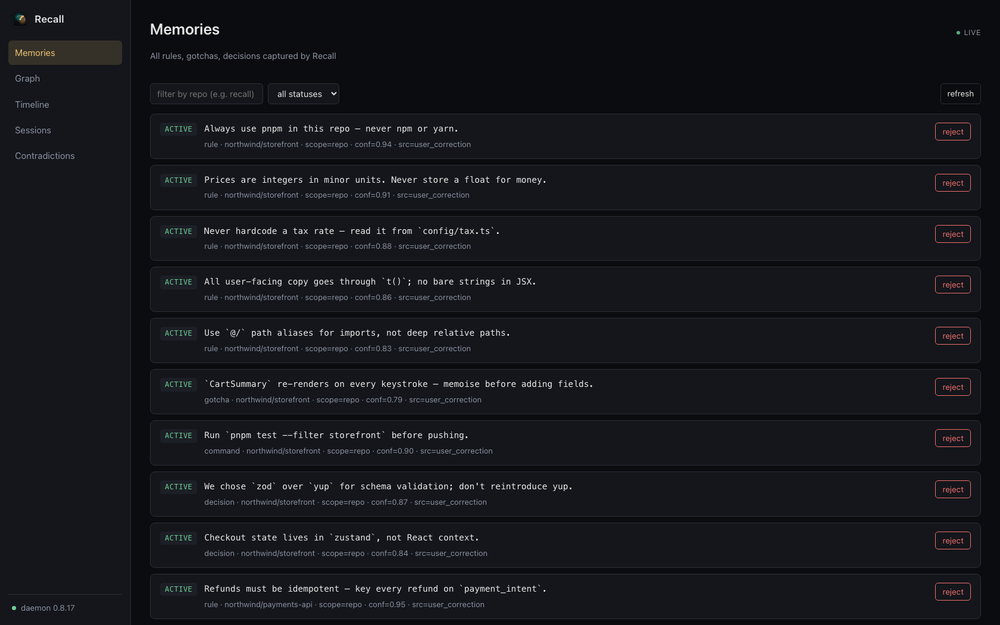
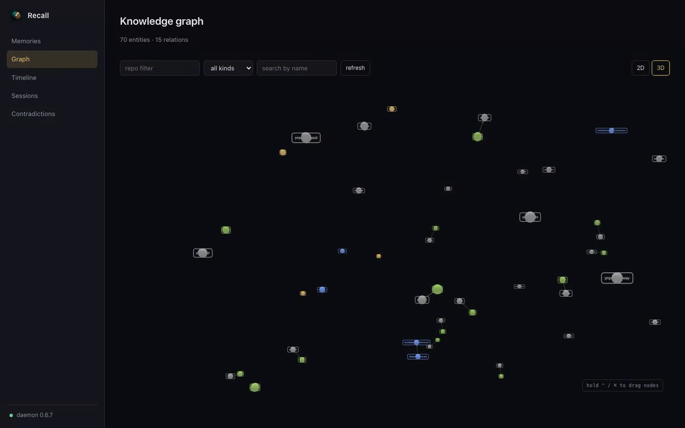
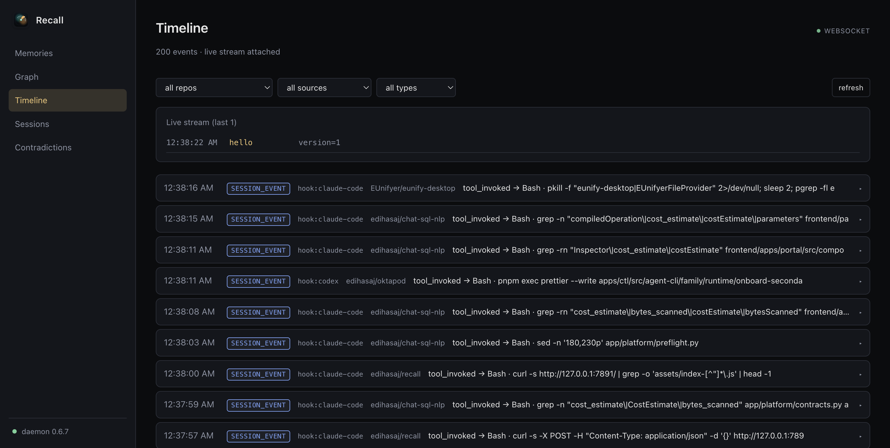
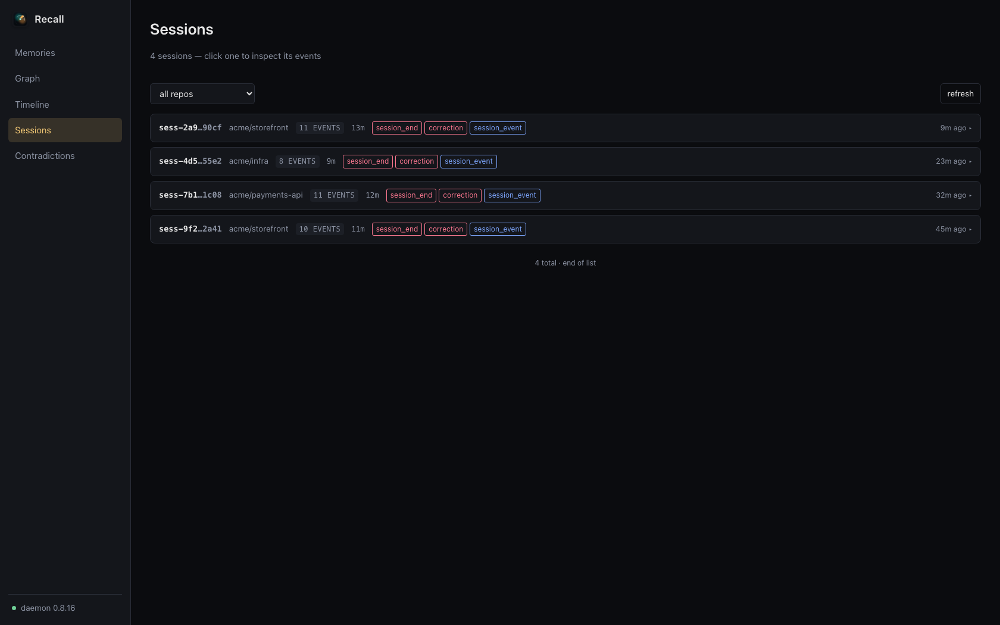

Bootstrap local facts
Recall reads repo docs, config, scripts, and history so cold-start context is useful immediately.
Your coding agents keep forgetting. Recall remembers — it learns from your corrections and feeds the right rules back into every session, automatically.
brew install --cask edihasaj/tap/recall
npm i -g @edihasaj/recall
curl -fsSL https://recallmemory.dev/install.sh | bash
npm i -g @edihasaj/recall
irm https://recallmemory.dev/install.ps1 | iex
npm i -g @edihasaj/recall
macOS 15+ menu bar app, Linux CLI, or Windows system-tray companion. Requires Node.js 22+. Free and open source.
Recall (northwind/storefront):
## Rules
- prices are integers in minor units — never store a float for money
- never hardcode a tax rate; read it from `config/tax.ts`
- [global] add a regression test with every bug fix
- always use pnpm here — never npm or yarn
## Commands
- test: pnpm test --filter storefront
- gate: pnpm lint && pnpm typecheck && pnpm test
## Gotchas
- `CartSummary` re-renders on every keystroke — memoise first
- checkout state lives in zustand, not React context
Fixed the rounding bug in pricing.ts — kept the total in minor units,
pulled the rate from config/tax.ts, memoised CartSummary,
and added a regression test. Gate is green; ready to push when you say.
Repeated corrections become short, durable repo rules — not a pile of chat logs to search.
Scoring, dedupe, and rejection gates keep noisy or one-off memories out of the prompt.
MCP server, lifecycle hooks, daemon, and CLI — for Claude Code, Codex, GitHub Copilot, opencode, Cursor, and Windsurf.
Recall reads repo docs, config, scripts, and history so cold-start context is useful immediately.
Report corrections, review feedback, and session outcomes through CLI, MCP, daemon endpoints, or hooks.
Quality profiles decide when memories graduate, merge, get demoted, or stay out of the prompt.
Agents receive concise, relevant instructions through lifecycle hooks and MCP without manual lookup.
What gets installed
Recall.app keeps daemon, dashboard, and optional cloud-sync health in one quiet window. Connect Recall Cloud from the sidebar when you want the same memory on every Mac and hosted agent; local MCP and lifecycle hooks keep doing the real work.

Open Dashboard in Browser from the menu bar, or run
recall webui start. Knowledge graph, timeline, sessions, and
contradictions — served locally on localhost:7891. No cloud, no account.




Recall Cloud
The CLI stays free and runs entirely on your machine. Recall Cloud is an opt-in, encrypted layer for cross-device sync, hosted MCP for web & remote agents, and shared team memory — your local-only sources never leave the machine.
Free · local CLI
Everything the open-source CLI does, on your machine.
Want cloud sync & hosted MCP? Pro — $9/mo.
Start free$19 / user / mo
Shared, encrypted memory for the whole team.
Custom
For orgs with compliance & scale requirements.
Install
One command on any platform — Homebrew on macOS, curl | bash on Linux,
one PowerShell line on Windows. Each installer auto-detects your coding agents and
wires up MCP and lifecycle hooks for you.
From the next session on, Recall injects the right rules automatically. The CLI is there when you want to inspect or override — you don't need it for the common path.
# macOS — install & done
brew install --cask edihasaj/tap/recall
# open Recall.app → Install + Start → magic# Linux — one-liner installer
curl -fsSL https://recallmemory.dev/install.sh | bash
# or do it by hand:
# npm i -g @edihasaj/recall && recall setup --yes
# recall daemon install # systemd --user service# Windows — PowerShell installer
irm https://recallmemory.dev/install.ps1 | iex
# or do it by hand:
# npm i -g @edihasaj/recall && recall setup --yes
# tray icon appears; right-click → Open Dashboard# contributors only — build from source
git clone https://github.com/edihasaj/recall.git
cd recall
npm ci
npm run build
npm test